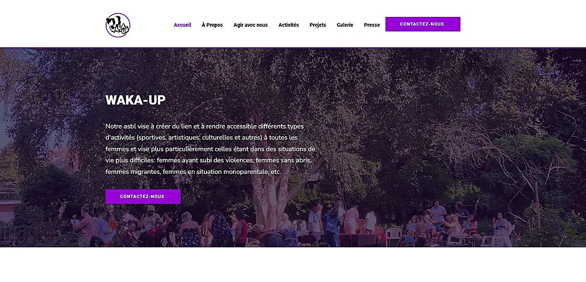

Contexte : Une collaboration née de l'adhésion aux valeurs
Mon ami Ibrahima, designer, m'a proposé de l'aider à refaire le site de l'ASBL Waka Up, une ASBL créée par des femmes pour les femmes. Touchée par leurs valeurs et le travail qu'elles ont déjà accompli, j'ai accepté de les épauler. Mon rôle ? Transformer leur vision en une expérience utilisateur fluide et cohérente.
Notre approche : UX & Design au service du contenu
C'était un travail d'équipe, où chacun a mis ses compétences au profit du projet :
Ibrahima (Design & Identité) :
: Il a créé l'identité visuelle,
hiérarchisé les informations et réalisé les maquettes initiales.


Moi (UX & Structure) :
Le défi principal était la navigation. Le site
initial contenait beaucoup d'informations dispersées, avec des répétitions qui alourdissaient le parcours.
- J'ai lu, analysé et réorganisé tout le contenu pour que l'utilisateur ne se perde plus.
- J'ai appliqué la charte graphique sur les widgets Wix (avec leurs limites techniques) pour garantir une cohérence visuelle.
- En l'absence d'Ibrahima, j'ai dû assurer la direction artistique sur certains éléments et assurer la cohérence globale du projet jusqu'à sa livraison.


Le Résultat : Un site clair, accessible et fidèle à l'esprit Waka
Le résultat est un site qui met en avant les activités et les valeurs de l'ASBL sans noyer l'utilisateur. J'ai pu prouver ma capacité à :
- Structurer l'information pour une meilleure lisibilité.
- S'adapter aux contraintes techniques (Wix) tout en respectant une identité visuelle forte.
- Prendre les rênes d'un projet pour assurer sa réussite, même en l'absence du co-designer.
Technologies et Outils Utilisés
- CMS : Wix
- Figma : Réaliser les maquettes